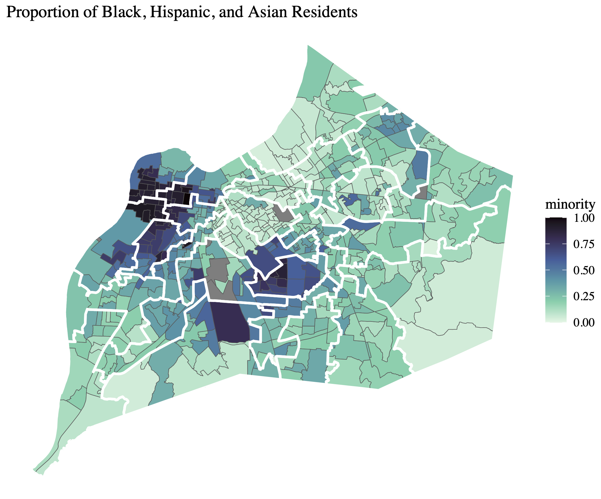
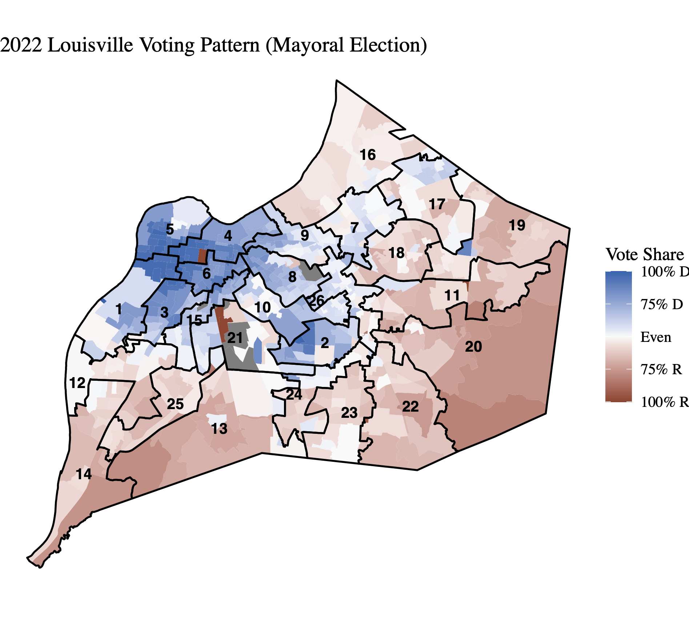
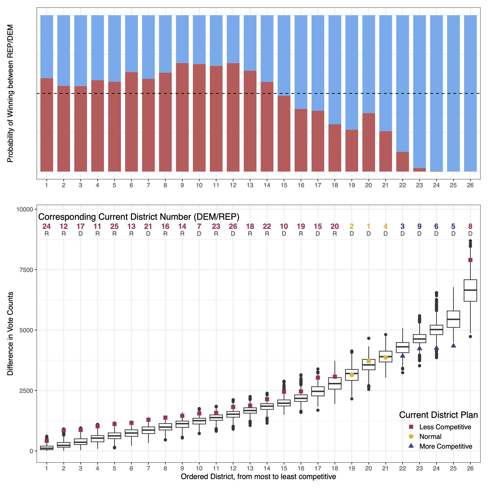
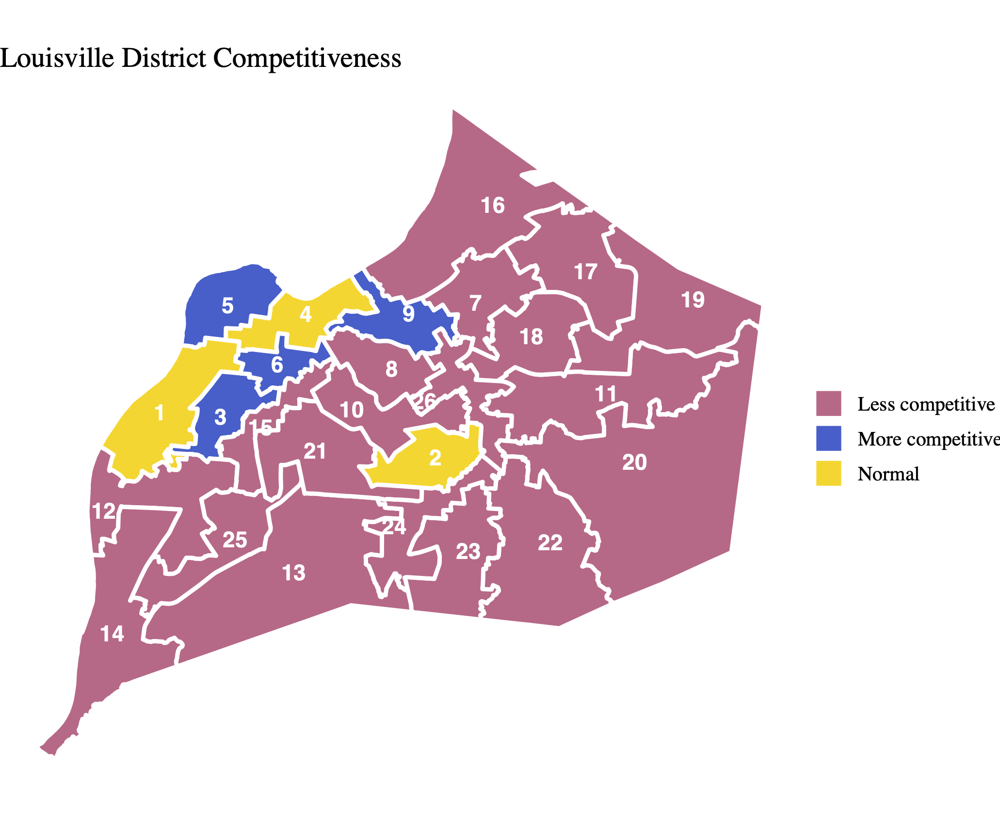
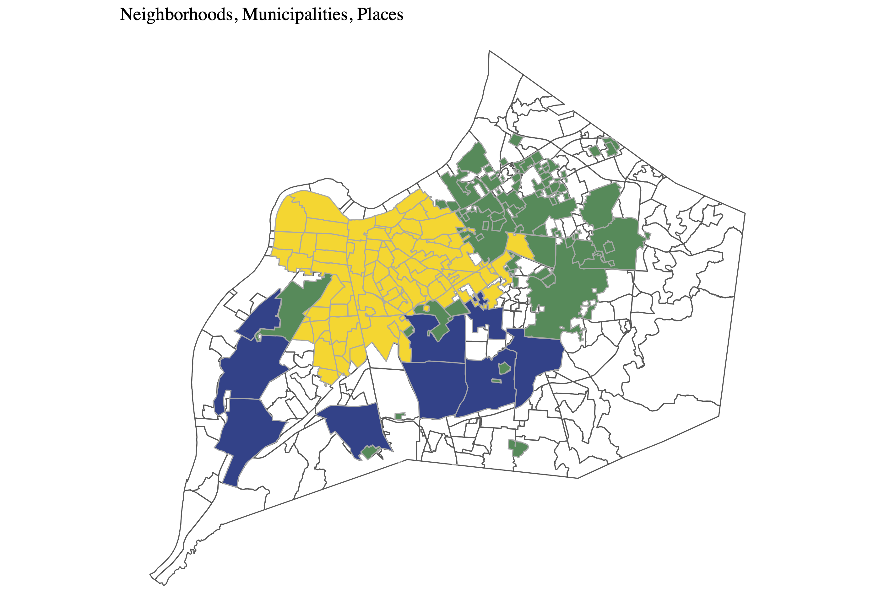
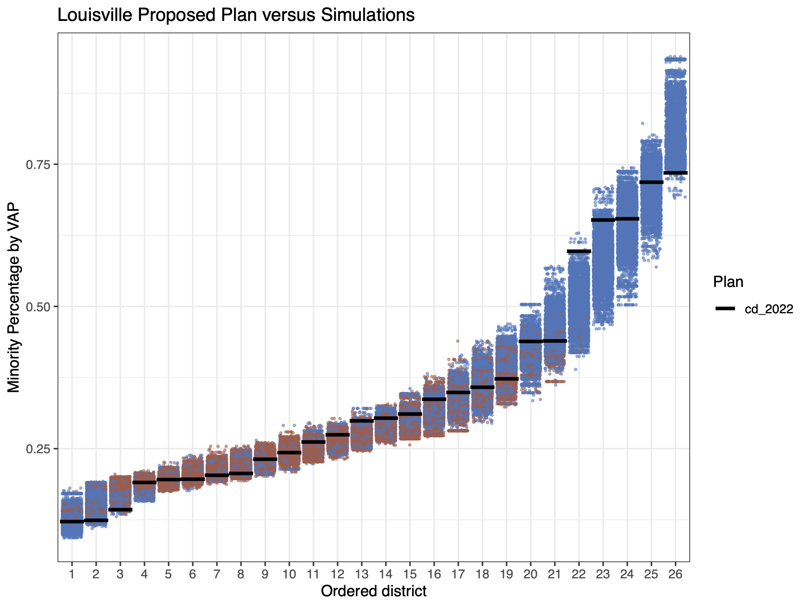
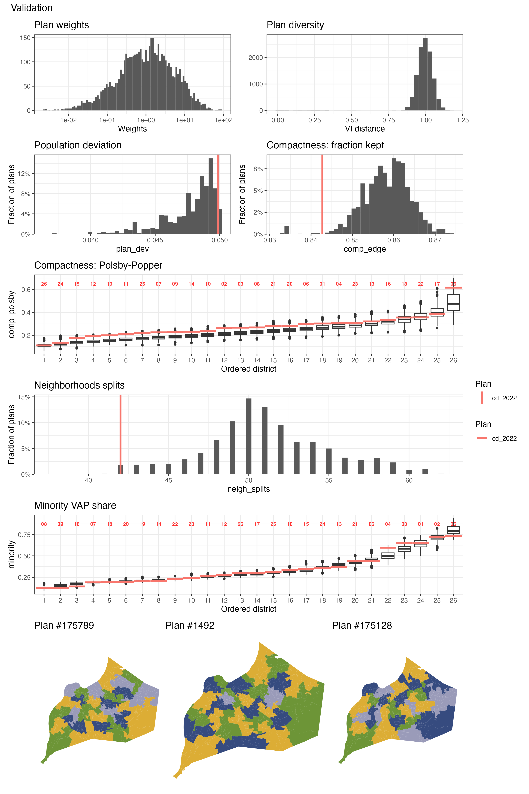

GUEST POST: Louisville/Jefferson County metro government (balance), Kentucky
An analysis of the electoral competitiveness of Louisville Metro Council Elections.
This post is part of our ALARM Summer Research program, where social scientists in training study redistricting analysis to learn skills in computational social science. The results do not necessarily reflect findings of the broader ALARM team, and are not intended to be used as evidence or recommendations.
Competitiveness in Louisville Metro Council Elections
How competitive are the Metro Council elections in Louisville, Kentucky? While elections ideally should be competitive, assessing the competitiveness is challenging due to the absence of a baseline for comparison. To address this, I first generate simulated plans using the Sequential Monte Carlo (SMC) algorithm1 and then calculate the baseline using these plans. I found that the competitiveness of the Metro Council elections significantly decreased in 19 out of 26 districts. Furthermore, additional analysis reveals that the reduced competitiveness has favored the Democratic incumbent, resulting in a gain of 2 seats.
Assessing Electoral Competitiveness with Algorithm-Assisted Redistricting Methodology
Approach
Identifying the baseline of competitiveness is a challenging task, but the SMC algorithm provides a valuable tool for determining where the standard level of competitiveness in Louisville should lie. Originally developed to identify gerrymandering, this algorithm generates numerous plans with the same redistricting requirements, political geography, and physical geography as the current district plan. Consequently, it provides various baselines for assessing the district plan, including for the competitiveness of Metro Council elections.
In this assessment, electoral competitiveness is measured by the difference in vote counts between Democrats and Republicans. A smaller (larger) difference suggests higher (lower) competitiveness. I calculate the difference in vote counts of each district across all simulated plans, and then order the districts from the smallest difference in vote counts to the largest within the simulated plan. This process is repeated across 5,000 plans, generating distributions of differences in vote counts for each district, ordered accordingly. Finally, I assess the competitiveness of each current district by comparing it to the corresponding distributions.
I consider a district has ideal competitiveness when its actual competitiveness falls within the 25th to 75th percentile of the corresponding distribution, or when it falls below the 25th percentile (more competitive than most of the simulated districts). Conversely, I consider the competitiveness of a district is notably reduced when the actual competitiveness exceeds the 75th percentile of the distribution.
Basic Information on Louisville
Louisville Metro Council
The Louisville Metro Council comprises 26 members who are elected from the city’s 26 districts in partisan elections. Council members serve staggered four-year terms. Since the merger with Jefferson County in 2003, the council has consistently maintained a Democratic majority. The distribution of seats held by each party is as follows (Democrats: Republicans): 15:11 (2006), 17:9 (2010), 17:9 (2014), 19:7 (2018), and 17:9 (2022)2.
Demographic
In 2020, the population of Louisville stood at 386,884, with approximately 67% identifying as White, 24% as Black, 7% as Hispanic, and 3% as Asian3.


Results
The results suggest that there is considerable room for improvement in the competitiveness of Louisville’s Metro Council elections. Out of the 26 districts, 19 were found to be less competitive, while 4 districts are more competitive and 3 districts fall within the normal range of competitiveness (see the lower graph of Figure 3 for more details).


Does Reduced Competitiveness Benefit the Incumbent?
Given that the competitiveness of Metro Council elections is heavily influenced by the district plan in use, the significant decrease in competitiveness observed in Louisville raises a question: Does reduced competitiveness benefit the Democratic incumbent?
In addition to assessing competitiveness, I calculated the probability of each district being won by either Democrats or Republicans using simulated plans (as shown in the upper graph of Figure 3). This analysis helped me identify potential cases where decreased competitiveness creates a favorable situation for the incumbent. For example, if a district is less competitive and primarily Democratic, but the calculated probability suggests a likelihood of over 55% for a Republican victory, it raises the possibility of gerrymandering to reduce competitiveness.
Figure 3 reveals that out of the 19 districts found to be less competitive, 4 of them (Districts 7, 17, 21, and 26) are currently represented by Democratic candidates, even though the probability indicates a greater likelihood of Republican victory with over 55%. However, on the other hand, this reduced competitiveness also favors the Republican Party in two districts (Districts 19 and 20).
This finding suggests that the reduced competitiveness in Louisville ultimately appears to contribute to creating favorable conditions for the incumbent, resulting in a 2-seat advantage.
Methods and Materials
Methods
I generated 175,000 district plans in two independent runs of the SMC algorithm, with a constraint to minimize neighborhood splits. This constraint reflects Louisville residents’ concerns about the current district plan’s neglect of neighborhoods4. From these simulated plans, 5,000 were randomly selected for the analyses above.
Before generating simulated plans, I conducted the following pre-processing steps on the data:
- Excluded 32 precincts5 for which geographical data were unavailable.
- Included data from 5 elections held in 2022 (Mayor, US Senator, County Judge/Executive, County Clerk, and Coroner) to calculate the estimated baseline partisanship.
Neighborhoods
Since the merger with Jefferson County in 2003, there are three distinct types of perceived local boundaries in Louisville; Neighborhoods, Municipalities, and Places. All three boundary types hold importance in understanding the local communities in Louisville; therefore, I combined all geographical data of neighborhoods, municipalities, and places, into one dataset, eliminating any overlaps.
Neighborhoods: lie within the Louisville city boundary that predates the city-county merger.
Municipalities: represent smaller cities within Louisville. Prior to the merger, these municipalities existed as independent governmental entities.
Places: located outside the former Louisville city boundary, where people have historically settled densely. They are locally identified by their respective name.

VRA Compliance
Simulated plans must comply with the Voting Rights Act (VRA), and prevent gerrymandering that may disproportionately disadvantage minority populations. VRA compliance necessitates a specific number of minority-majority districts, where minorities constitute over 50% of the voting-age population. As shown in the figure below, Louisville already possesses approximately five Minority Opportunity-to-Elect districts. Therefore, I did not impose additional constraints in this regard.

Validation of the Simulated Plans
In addition to the VRA compliance, simulated plans should also be realistic enough to serve as viable alternatives to the enacted plan. They must incorporate redistricting requirements6, including population balance, geographical compactness, and the preservation of administrative boundaries. In the following graphs, we can see that the simulated plans are all unique, and they generally perform better without deviating significantly from the current plan in terms of population deviation, geographical compactness, and minority Voting Age Population (VAP) share. For neighborhoods, while simulated plans, on average, involve more splitting than the current plan, I attempted to minimize such splits by imposing a constraint.

Materials
Data
Election Data
Geographical Data
Conclusion
The competitiveness of Metro Council elections is heavily influenced by the district plan employed. However, assessing how closely the current competitiveness aligns with its potential level has been challenging due to the lack of a baseline for comparison. The SMC algorithm addresses this issue by generating numerous simulated plans with the same political geography and redistricting rules as the current one. I found a significant reduction in the competitiveness of Louisville Metro Council elections across 19 out of 26 districts. Furthermore, this decreased competitiveness favors the incumbent Democrat in the 2-seat advantage.
In addition to the assessment, I would like to highlight that considerable attention has been paid to respecting the neighborhoods of Louisville. Gauging how residents perceive their local communities is very difficult due to its subjective nature, but at the same time, ensuring that the district plan respects their neighborhoods stands out as one of the biggest concerns for residents. Louisville provides us with these challenging-to-measure psychological ties through three types of geographical information: Neighborhoods, Municipalities, and Places. I combined this spatial data into one dataset and used it when generating simulated plans to better align with the demands of Louisville residents.
Footnotes
McCartan, C., & Imai, K. (2023). Sequential Monte Carlo for sampling balanced and compact redistricting plans. The Annals of Applied Statistics, 17(4), 3300-3323.↩︎
All information regarding the elections in Louisville is based on the official statements of votes cast available at the website below. Jefferson County Clerk Election Center, Election Results, https://elections.jeffersoncountyclerk.org/election-results/↩︎
United States Census Bureau, Quick Facts Louisville city, Kentucky; Louisville/Jefferson County metro government (balance), Kentucky, https://www.census.gov/quickfacts/fact/table/louisvillecitykentucky,louisvillejeffersoncountymetrogovernmentbalancekentucky/POP010220↩︎
Louisville-Jefferson County Metro Government, Redistricting Information, https://louisvilleky.gov/government/metro-council/redistricting-information↩︎
The excluded precincts are: A141, A143, A155, B186, E186, E187, G197, H146, H161, H170, H172, H174, I143, J142, J143, J161, J167, K136, M187, M190, M204, M205, M206, M207, M208, M209, N124, N127, N159, O139, Q147, V135.↩︎
Redistricting requirements in Louisville: in accordance with Kentucky state statutes, Metro Council boundaries must be compact and contiguous, have equal populations, and respect existing neighborhood, community, and city boundaries.↩︎